Bab 18 dari 27
Kas, Biaya, Uang Masuk, dan Buku Hutang
18.1 Biaya / kas keluar
Catat semua pengeluaran: listrik, sewa, gaji, pembelian kecil, transportasi.
- Buka Biaya / Kas Keluar.
- Isi tanggal, kategori, nominal, dan keterangan.
- Pilih akun kas/bank bila akuntansi aktif.
- Lampirkan bukti bila perlu.
Alur CRUD biaya / kas keluar
Lihat daftar — Menu Biaya / Kas Keluar menampilkan filter rentang tanggal, tombol EXPORT EXCEL dan CETAK PDF, ringkasan Total Pengeluaran serta Total Data, dan tabel catatan biaya. Rentang tanggal default adalah hari ini, jadi kosongkan filter atau perluas tanggal untuk melihat catatan lama.

Gambar 18.1 — Kas Keluar sebelum ada catatan pada rentang tanggal berjalan. Tambah biaya — Klik + CATAT BIAYA. Panel Input Kas Keluar terbuka berisi pilihan akun biaya (COA), metode pembayaran, tanggal transaksi, nominal, keterangan, dan lampiran bukti.
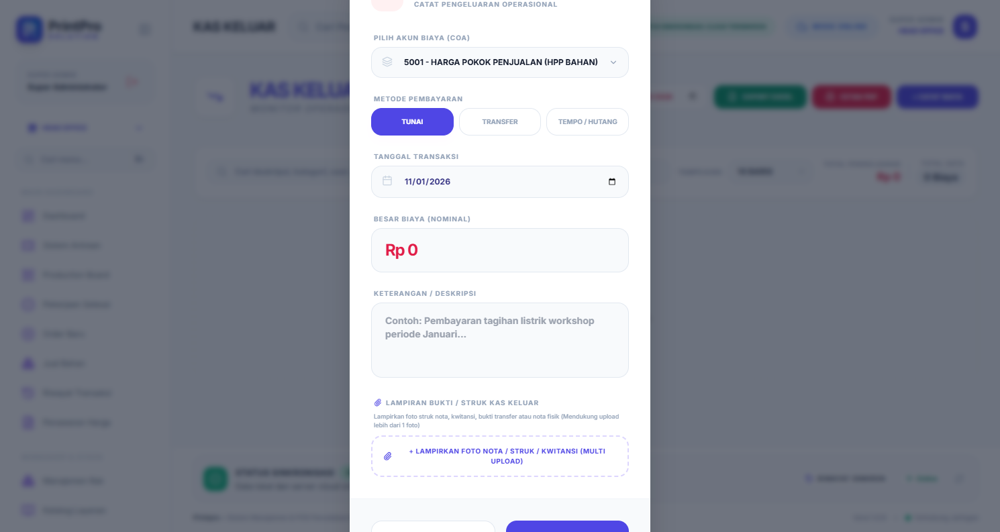
Gambar 18.2 — Panel input kas keluar yang masih kosong. Isi detail — Pilih Akun Biaya (COA), tentukan Metode Pembayaran, lalu isi tanggal, nominal, dan keterangan. Metode TRANSFER memunculkan pilihan Bank Sumber; metode TEMPO / HUTANG memunculkan isian DP / Bayar Pertama dan Jatuh Tempo.
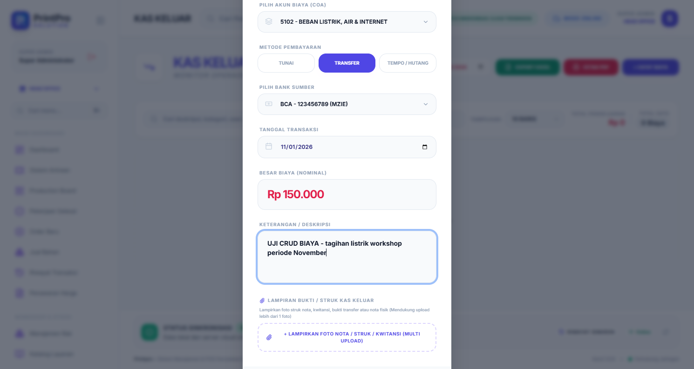
Gambar 18.3 — Catatan biaya listrik dengan metode transfer ke rekening BCA. Simpan dan verifikasi — Klik SIMPAN DATA. Catatan tampil pada tabel lengkap dengan kategori COA, tanggal, nominal, metode, rekening, dan cabang, sementara ringkasan total ikut diperbarui. Jika saldo kas/bank tidak mencukupi, sistem menolak penyimpanan dengan peringatan Saldo Tidak Mencukupi agar saldo tidak minus.
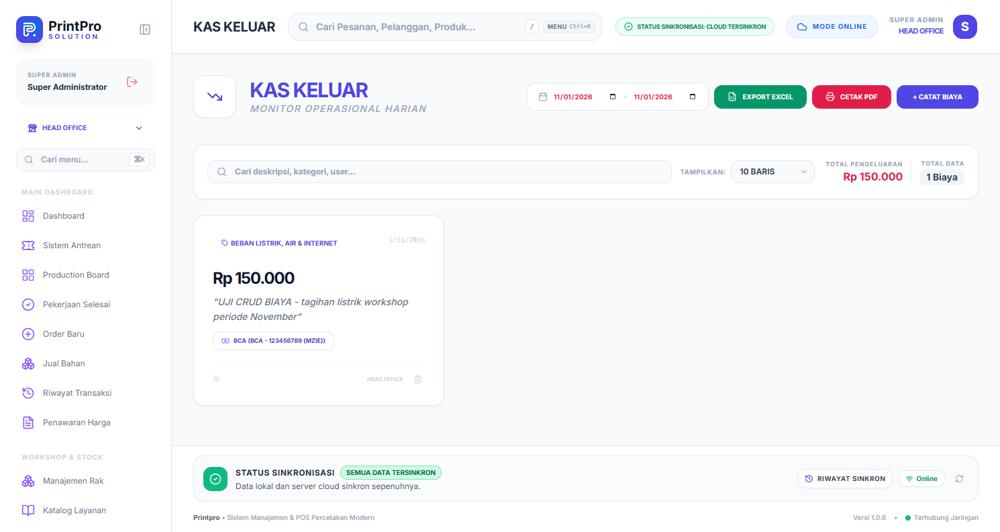
Gambar 18.4 — Catatan biaya baru tampil pada daftar dan total pengeluaran bertambah. Hapus biaya — Modul ini tidak menyediakan tombol ubah; koreksi dilakukan dengan menghapus lalu mencatat ulang. Klik ikon hapus pada baris, lalu tekan Ya, Hapus pada dialog Hapus Kas Keluar?. Jurnal akuntansi terkait ikut terhapus.
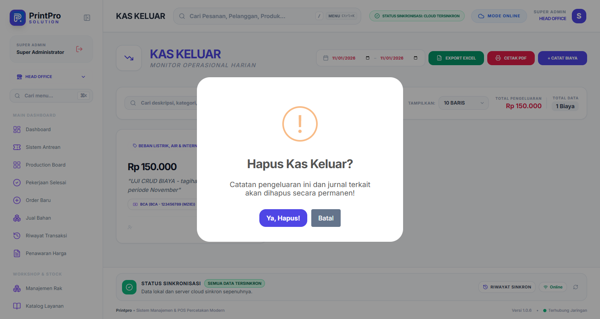
Gambar 18.5 — Dialog konfirmasi hapus catatan kas keluar. Verifikasi penghapusan — Muat ulang halaman. Catatan uji hilang dan ringkasan total kembali nol.
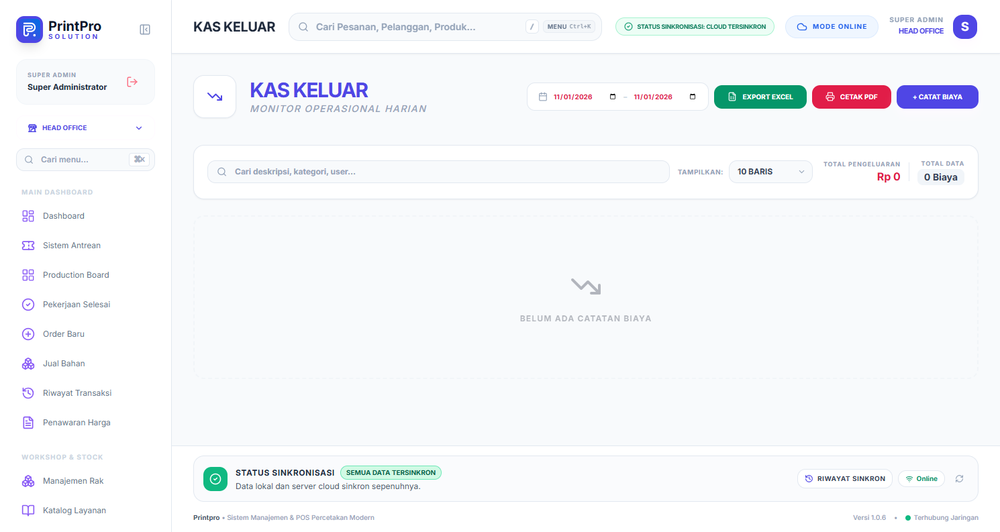
Gambar 18.6 — Daftar kembali kosong setelah catatan uji dihapus.
Catat biaya pada hari yang sama dengan transaksinya agar laporan harian dan tutup kas cocok. Untuk pengeluaran rutin bernilai besar, pilih metode TEMPO / HUTANG bila pembayarannya belum dilakukan supaya saldo kas tidak terpotong sebelum waktunya.
18.2 Uang masuk
Mencatat penerimaan selain penjualan order, misalnya pelunasan piutang, setoran modal, atau pendapatan lain.
Alur penggunaan uang masuk
Buka laporan — Menu Uang Masuk (judul Uang Masuk & Laporan FO) merangkum penerimaan per metode: total masuk, tunai, transfer, QRIS, debit, dan kartu kredit. Gunakan filter cabang serta periode Hari Ini, Kemarin, Bulan Ini, Bulan Lalu, atau Semua.
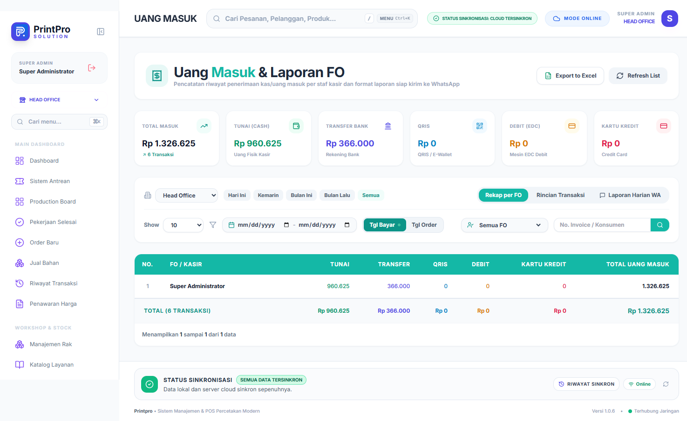
Gambar 18.7 — Rekap per FO dengan periode Semua dan filter cabang Head Office. Telusuri rincian — Tab Rincian Transaksi menampilkan setiap pembayaran: nomor invoice, tanggal invoice, konsumen, tanggal bayar, FO kasir, metode/bank, lampiran bukti, dan jumlah. Persempit data lewat filter metode, filter FO, rentang tanggal, serta kolom No. Invoice / Konsumen; klik nomor invoice untuk membuka detail pesanan.
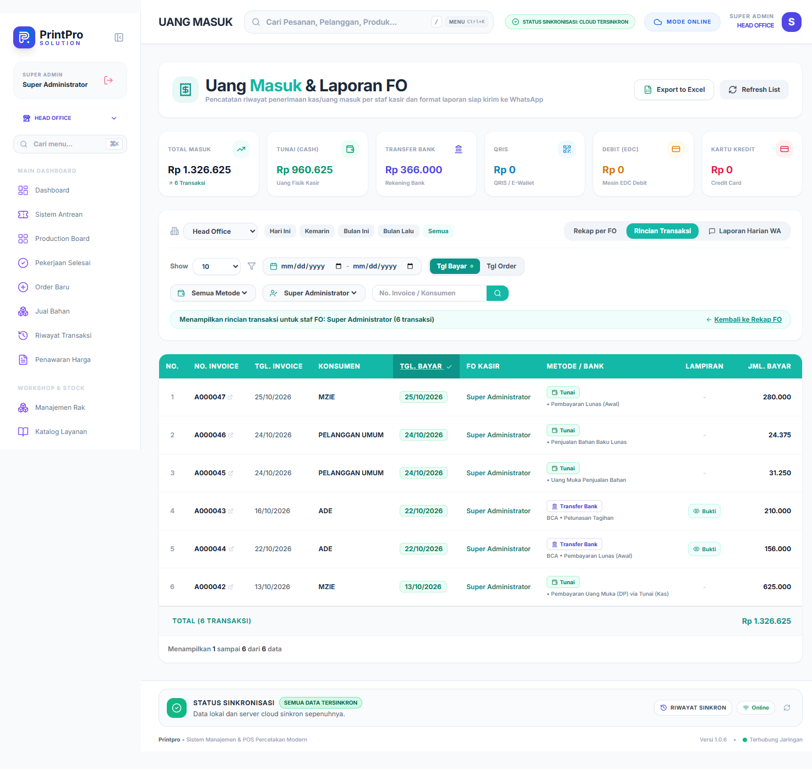
Gambar 18.8 — Rincian transaksi satu staf FO beserta tautan bukti transfer. Kirim laporan harian — Tab Laporan Harian WA menghasilkan teks laporan siap kirim: jumlah konsumen, omset, bayar, piutang, uang masuk per metode, order batal, dan total. Pilih tanggal laporan lalu gunakan Salin atau Kirim ke WhatsApp Grup.
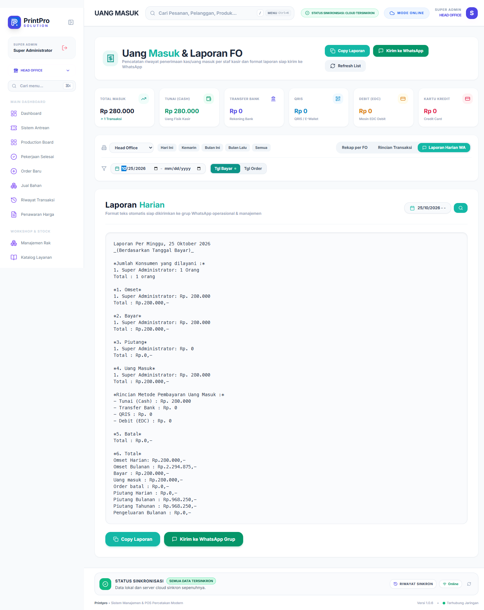
Gambar 18.9 — Laporan harian 25 Oktober 2026 siap dikirim ke grup WhatsApp.
Halaman ini bersifat laporan (baca saja): catatan uang masuk terbentuk otomatis dari pembayaran order, sehingga koreksi dilakukan di Riwayat Transaksi (membatalkan atau mencatat ulang pembayaran), bukan dari halaman ini.
18.3 Buku hutang
Memantau hutang ke supplier dan piutang pelanggan. Tandai pembayaran agar saldo akurat.
18.4 Rekening bank
Daftarkan rekening toko yang digunakan untuk transfer/QRIS. Rekening dapat dipilih saat mencatat pembayaran dan tercetak di invoice.
Alur CRUD rekening bank
Lihat daftar — Menu Rekening Bank menampilkan daftar rekening aktif dengan filter cabang dan kolom pencarian. Setiap baris memuat bank, nomor rekening, atas nama, cabang, status, serta tombol aksi.
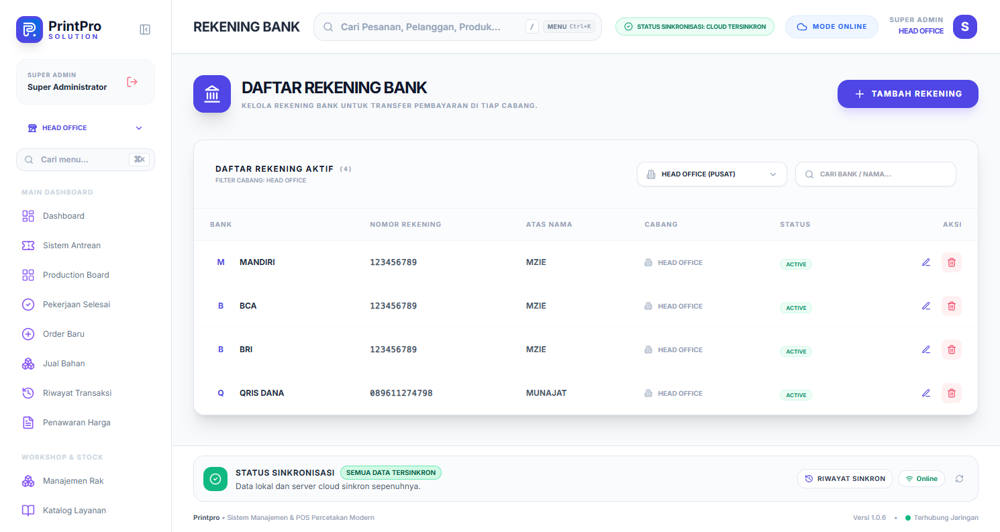
Gambar 18.10 — Daftar rekening bank sebelum perubahan. Tambah rekening — Klik TAMBAH REKENING. Formulir rekening baris baru terbuka di bagian atas tabel.
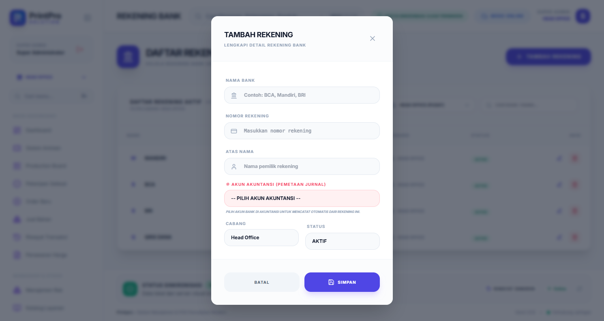
Gambar 18.11 — Formulir rekening bank yang masih kosong. Isi data rekening — Pilih Bank, lalu isi nomor rekening, atas nama, cabang, akun akuntansi (COA), dan status. Tandai rekening utama bila dipakai sebagai tujuan transfer default.
Gambar 18.12 — Data rekening baru yang sudah diisi lengkap dengan akun akuntansi. Simpan dan verifikasi — Klik SIMPAN. Rekening baru tampil pada daftar dan jumlah rekening aktif bertambah.
Gambar 18.13 — Rekening baru tampil pada daftar. Ubah rekening — Klik ikon edit pada baris rekening, lalu perbarui data yang perlu dikoreksi.
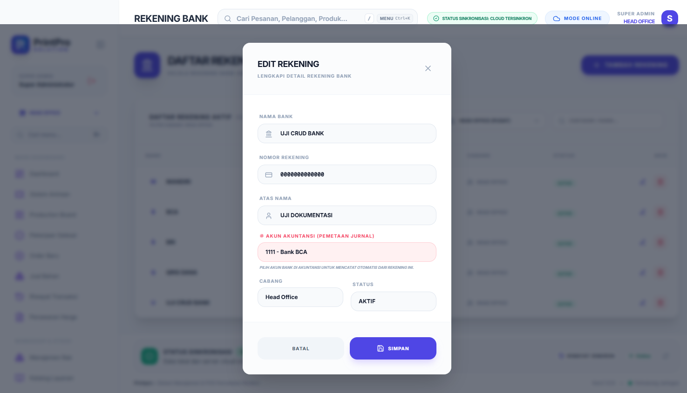
Gambar 18.14 — Form ubah rekening yang sudah terisi data sebelumnya. Verifikasi perubahan — Setelah SIMPAN, nama bank atau atas nama yang baru langsung tampil pada baris daftar.
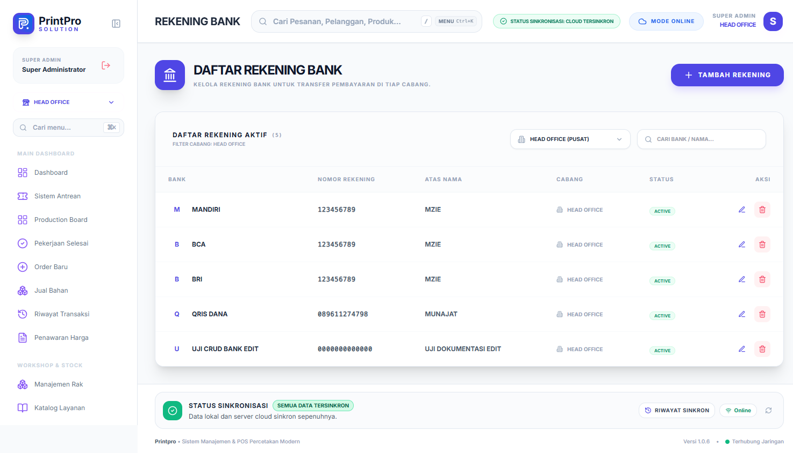
Gambar 18.15 — Atas nama rekening yang sudah diperbarui. Hapus rekening — Klik ikon hapus pada baris rekening, lalu tekan Ya, Hapus! pada dialog Hapus Rekening?.
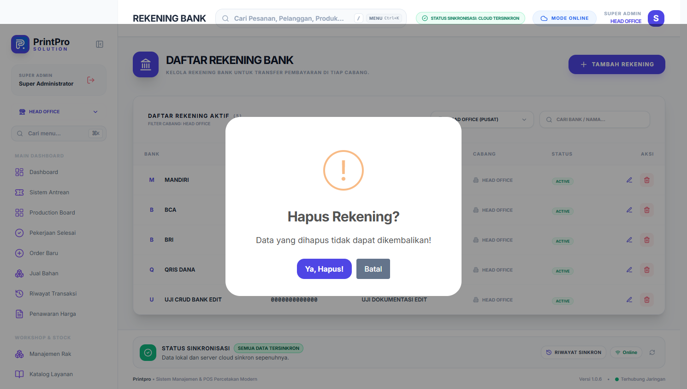
Gambar 18.16 — Dialog konfirmasi hapus rekening bank. Verifikasi penghapusan — Muat ulang halaman. Rekening uji hilang dan jumlah rekening aktif kembali seperti semula.

Gambar 18.17 — Daftar rekening kembali normal setelah rekening uji dihapus.
Hindari menghapus rekening yang sudah dipakai pembayaran lama; nonaktifkan statusnya agar riwayat tetap utuh dan rekening tidak lagi muncul sebagai pilihan pembayaran.
18.5 Tutup kas harian
Disarankan setiap akhir hari:
- Cocokkan uang fisik dengan total pembayaran tunai.
- Catat selisih bila ada.
- Pastikan semua biaya hari itu sudah dicatat.
- Simpan laporan harian.